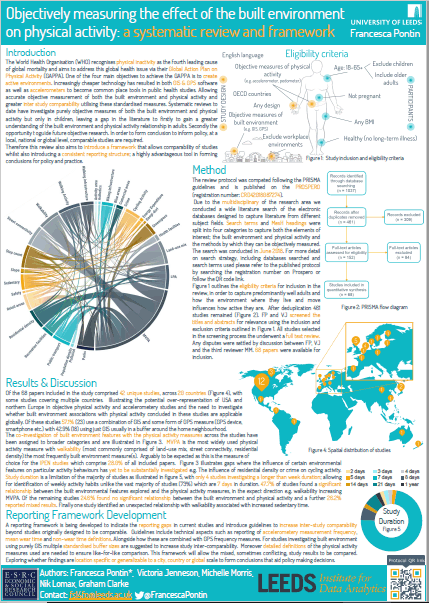

In June 2019 I attended the International Society for Behavioural Nutrition and Physical Activity’s Annual meeting in Prague. As a leading conference for both behavioural nutrition and physical activity research I enjoyed being able to learn what is going on at the forefront of the physical activity field. Whilst also indulging in some nutritional research, which I haven't been immersed in since my switch to data, geography and physical activity from food science and nutrition. It was particularly beneficial to be able to speak to and hear about the research being conducted by physical activity researchers as within LIDA I am the only one focused specifically on this field.
Highlights of the conference include participating in a big data workshop preceding the conference (outlined below) and presenting my poster on my systematic literature review. I was particualry encouraged by the excitment arround the poster; which is defineitly motivation to get the review finished and submitted for publication ASAP.
It was also great to catch-up with the other ECR researchers I have previously met at ISPAH and making new connections. Especially having a dance at the conference dinner/party in an 800-year-old convent, which will not be forgotten in a hurry.
I had a few quesitons about how to create the chord diagram on my poster. Chord diagrams come from the field of genetics and show relationships between vairables. The thicker the line, in the case of the systematic review, the more times the two vriables have been investigated together in the literature.
Tutorial

The full review protocol is pubished on Prospero CRD42018087274
Having introduced 'big data' and addressed the questions of 'What?', 'Where form? and 'How?' we were given a hypothetical situation and challenged in groups to create identify data sources to create a user phenotype. Asked how we would use these to use these data source to create real world behavioural phenotypes and finally asked to create hypothetical phenotypes from our chosen data sources. The wide range of expertise and backgrounds in the room prompted interesting discussions and a wide range of phenotypes resulting from different ways to use 'big data'. It was particularly interesting how the focus of these phenotypes was to eventually design interventions, as previously I have approached the use of big data in physical activity and nutrition from an observational and measurement perspective.